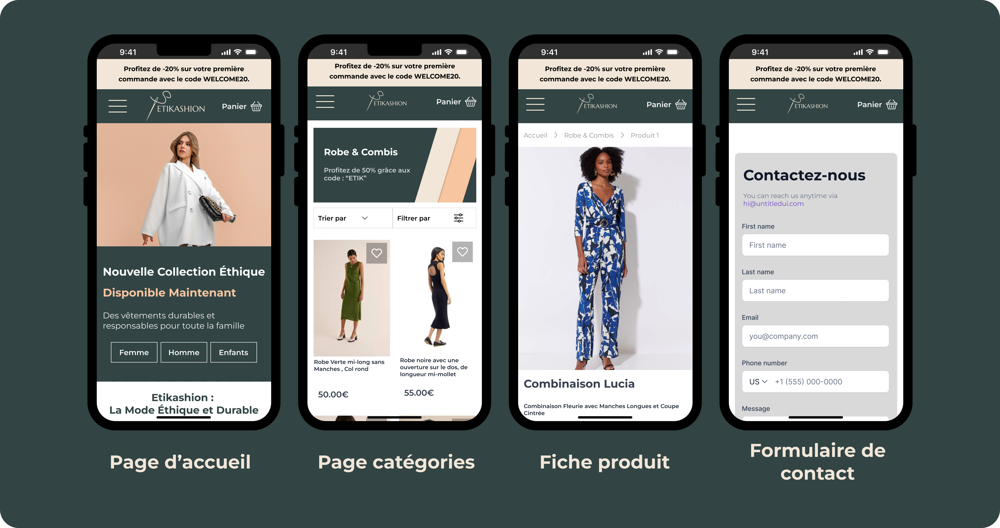

💡 Ce que j'y ai appris sur moi
J'ai découvert ma capacité à être force de proposition dans la définition d'un concept complet. J'aime le challenge qui consiste à passer d'une idée abstraite à des maquettes concrètes, fonctionnelles et opérationnelles.
Le Brief
Contexte & Défi
L'objectif de cette stratégie produit était de concevoir un dispositif digital capable de soutenir l'expansion nationale d'une marque de prêt-à-porter écoresponsable, en intégrant notamment un espace de recrutement pour les futurs distributeurs franchisés et le lancement d'une nouvelle gamme de produits.
Au sein d'une équipe pluridisciplinaire de 4 personnes, j'ai pris la responsabilité de la conception de la plateforme e-commerce, de l'expérience utilisateur (UX/UI) ainsi que de la planification temporelle du projet.
Structure de l'équipe
- ▪ Pôle UX/UI & Web : Conception, prototypage et intégration CMS
- ▪ Pôle Stratégie : Étude d'opportunité et plan de lancement
- ▪ Pôle Graphisme : Direction artistique et identité visuelle
- ▪ Pôle Franchise : Modélisation du parcours distributeurs
01 / Gestion de Produit
Missions & Exécution
Méthodologie produit appliquée du besoin aux livrables
Maquettage Dual-Level (Figma)
Conception des parcours utilisateurs sous Figma à travers deux niveaux de maturité : une version squelette (Wireframe) centrée sur l'ergonomie, suivie d'une version UI Haute Fidélité. Déclinaisons optimisées pour formats Desktop, Tablette et Mobile.
Architecture des Tunnels
Cartographie complète de l'expérience d'achat (Page d'accueil, Catégories, Fiches produits, Tunnel de conversion) et modélisation du tunnel d'acquisition B2B pour la prise de contact des franchisés.
Gouvernance & Planning Gantt
Modélisation de la roadmap de déploiement via un diagramme de Gantt. Structuration des dépendances entre la création de l'identité graphique, la rédaction des spécifications et l'intégration technique.
Intégration CMS Responsive
Développement et intégration sur WordPress & WooCommerce en s'appuyant sur le constructeur Elementor. Réalisation de tests de conformité pour garantir la fluidité des interfaces.
02 / Design Showcase
Livrables & Aperçu de la Maquette
Focus sur l'ergonomie responsive et le parcours utilisateur e-commerce
L'environnement de démonstration e-commerce étant privé, l'ensemble de la recherche utilisateur, de l'architecture d'information et des composants graphiques mobiles est consultable directement sur l'espace de conception interactif.

Maquette interactive
Wireframes & UI Haute Fidélité
🛠️ Environnement Technique
Figma
Wireframes & UI
WordPress
Architecture CMS
Elementor
Intégration responsive
Gantt
Planification produit